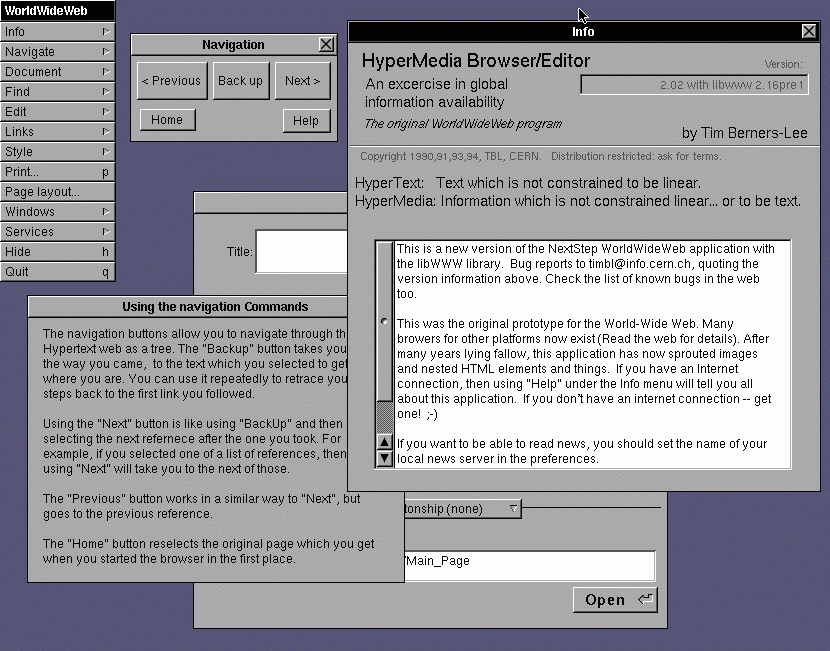

Site Web
LUn site web est un ensemble de pages web qui peuvent être consultées en suivant des hyperliens à l'intérieur du site. L'adresse web d'un site correspond en fait à l'URL (Uniform Resource Locator) d'une page web prévue pour être la première consultée : la page d'accueil. La consultation des pages d'un site s'appelle une « visite », car les hyperliens devraient permettre de consulter toutes les pages du site sans le quitter (sans devoir consulter une page web hors du site). Une visite peut commencer par n'importe quelle page, particulièrement lorsque son URL est donnée par un moteur de recherche. Techniquement, rien ne distingue la page d'accueil d'une autre page. Les pages web sont écrites dans un langage informatique conçu pour contenir des hyperliens, le HTML (Hypertext Markup Language).
On parle parfois de « site internet » par métonymie, au lieu de site web. On devrait parler de site web à destination d'internet, mais par abus de langage, l'expression site internet reste souvent utilisée. Les sites web ne sont pas forcément accessibles par internet. Par exemple, les intranet peuvent contenir un ou plusieurs sites web non accessibles via internet.
Aujourd'hui, on considère que le World Wide Web (le Web) est constitué de l'ensemble des sites web en ligne sur internet. Le protocole client-serveur HTTP (HyperText Transfer Protocol) est utilisé pour les communications entre les serveurs web hébergeant les sites web, et les logiciels client HTTP que sont les navigateurs web et robots d'indexation.

Sommaire
- Histoire
- Titres et trophées
- Sites statiques et dynamiques
- Systèmes de gestion de contenu
- Histoire
Le World Wide Web (WWW) a été créé en 1989 par l’ingénieur anglais du CERN, Tim Berners-Lee. Le web a été essentiellement conçu pour partager automatiquement des informations entre les scientifiques, universités et instituts du monde entier. info.cern.ch fut le premier site web mis en ligne, fonctionnant sur un ordinateur NeXT au CERN. Ce site est toujours accessible par internet5. Le premier site web français est créé en 1992 au CNRS6. À cette période, il existe seulement 26 sites web7.
Avant l’introduction de HTML et HTTP, d’autres protocoles tels que FTP et Gopher étaient utilisés pour obtenir des fichiers depuis un serveur. Ces protocoles offraient une organisation hiérarchique de répertoires dans lesquels l’utilisateur naviguait et choisissait les fichiers à télécharger.
- Organisation d'un projet web
Les différentes étapes de la conduite d'un projet web peuvent être résumées ainsi8 :
lancement : étude des besoins, de la concurrence et de l'existant pour l'établissement d'un cahier des charges ;
conception : élaboration de la structure (arborescence), du contenu des pages web et en particulier de la page d'accueil et éventuellement un moteur de recherche, du graphisme, qui font partie du cahier des charges fonctionnel ;
réalisation : voir ci-dessous ;
production : le site est mis en ligne, devient accessible au public ciblé ;
exploitation : phase de maintenance et de promotion du site, avec notamment le référencement naturel (Netlinking) ou payant (Google AdWords, Microsoft AdCenter, ou autres).
L'étape de réalisation comprend :
- la réservation et gestion d'un nom de domaine (l’adresse web à laquelle le site est accessible) ;
- la mise en œuvre d'une infrastructure d'hébergement du site (serveurs web, base de données...) ;
- le développement de l'interface utilisateur (frontend), la partie visible dans le navigateur ; les différentes pages sont décrites en langages connus des navigateurs web, principalement HTML, CSS et JavaScript. Les éléments graphiques (et éventuellement des publicités servant à rémunérer le site) sont intégrés dans ces pages ;
- le développement de l'arrière plan (backend), la partie qui fonctionne côté serveur.
La création d'un site peut être confiée à une agence web, un travailleur indépendant, ou faite soi-même. Si la création est déléguée, il est important en amont d'avoir défini un premier cadrage ou cahier des charges du projet. Pour développer un site web soi-même, il est possible d'utiliser un éditeur de pages web ; pour les développeurs web avertis, un simple éditeur de texte peut suffire. On peut aussi avoir recours à un système de gestion de contenu.
- Sites statiques et dynamiques
Sites statiques:
Ces sites ont le mécanisme de fonctionnement le plus simple : les URL correspondent à un fichier renvoyé par le serveur web. Le contenu des pages d'un site statique ne dépend donc pas de variables telles que la date ou de bases de données. Pour changer le contenu d'une page, il est nécessaire de changer le contenu du fichier.
En outre, les visiteurs peuvent seulement voir le contenu du site mais pas y participer. Pour les réaliser, seuls les langages dits d'interface utilisateur (frontend) sont nécessaires, c'est-à-dire HTML, CSS et JavaScript (en théorie, il est toutefois possible d'utiliser uniquement le HTML).
-Le HTML permet d'écrire le contenu de sa page ;
-Le CSS permet de mettre en page le contenu (emplacement des éléments), et mettre en forme le texte (police d'écriture, couleur, taille). Depuis CSS3, il est également possible de créer des modifications plus évoluées (animation, ombres, etc.) ;
-JavaScript permet d'ajouter du dynamisme, mais uniquement du côté du navigateur (par exemple des animations graphiques).
Sites dynamiques
es sites offrent un contenu qui peut évoluer dans le temps. Des programmes tournent du côté des serveurs, à l'arrière plan, (backend) pour générer les pages du site. Ces programmes peuvent se servir de bases de données ou autres sources de données pour composer les pages qui seront affichées dans le navigateur.
Ce dynamisme apporte des fonctionnalités que ne peuvent pas offrir les sites dits statiques. Par exemple les visiteurs peuvent y participer (commentaires sur un blog, changement du contenu des pages d'un wiki...). Ils ont donc pratiquement supplanté les sites statiques au début des années 2000.
Pour les réaliser, on a également besoin de HTML, de CSS et de JavaScript, mais les programmes qui tournent du côté serveur utilisent d'autres langages qui peuvent créer dynamiquement les pages, en analysant les requêtes des visiteurs pour ensuite fabriquer une réponse adaptée.
Il existe plusieurs langages pour créer ces pages : PHP, Java, C#, Ruby, voire d'autres comme C++, Python et Visual Basic via l'interface CGI.
Leur temps de chargement est généralement plus long que pour les pages statiques, toutefois il est possible d'obtenir des valeurs proches en stockant les pages dynamiques déjà appelées dans une mémoire cache, qui les réaffichera plus vite.
- Systèmes de gestion de contenu
Les systèmes de gestion de contenu (initiales SGC, CMS en anglais) permettent de fabriquer des sites web en utilisant des modèles pré-établis faits par des programmeurs ou des communautés de programmeurs (voir Liste de systèmes de gestion de contenu). Il existe de nombreux CMS comme WordPress, WiX, Jimdo, Shopify... Certains CMS nécessitent une prise en main technique plus ou moins avancé, par exemple sous WordPress il est souvent recommandé de débuter avec un prestataire, sous WIX à l'inverse la gestion est vraiment simple et permet de s'affranchir de différents prestataires. Ces logiciels sont disponibles pour les débutants et simplifient certaines étapes comme la programmation informatique ou l'architecture du site. Les procédures de demande du nom de domaine, d'hébergement du site et de référencement sont semblables aux sites personnalisés classiques.